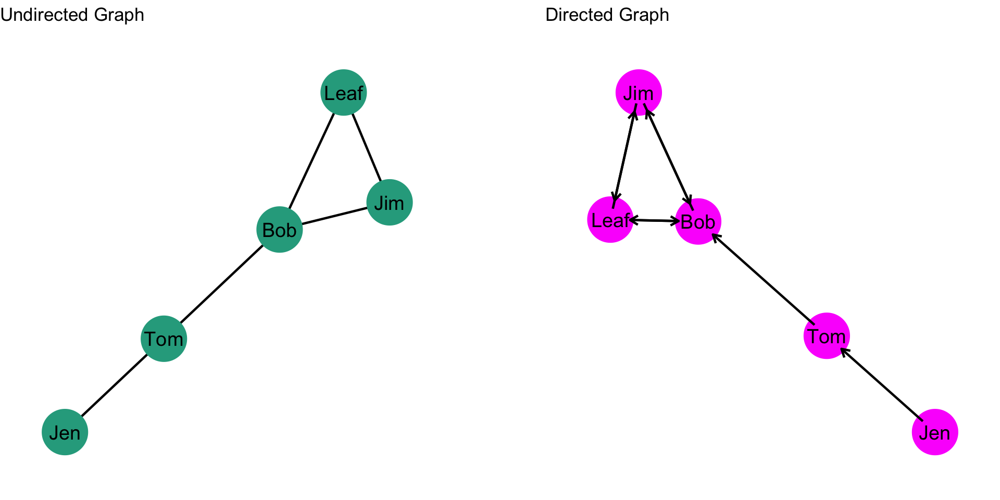
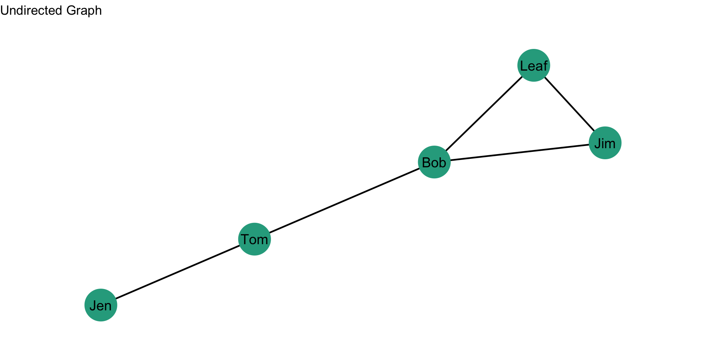
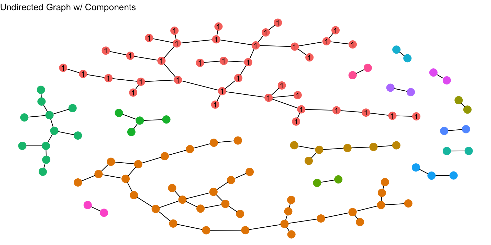

Network Description
Understanding the basic structure of a network is the first step toward making informed, data-driven decisions in crime analysis. Networks, whether simple or complex, contain key features that offer valuable insights into relationships, patterns, and points of vulnerability. As crime analysts, the ability to describe these features (such as the number of connections), the centrality of nodes, and the overall shape of the network, is essential for identifying trends and prioritizing interventions. But how do we translate raw data into these insights? Before we get too deep into analysis, we should start by doing some basic description of a network to get our hands dirty.
By the end of the chapter, you should be able to answer this question:
- How can I describe some simple features of a network?
Simple Network Summary
So you have you network data, now what? The next step is to summarize its most critical features, which can guide your analysis. First, consider the size: How big is the network? This is the number of nodes involved, giving a sense of its scale. Next, think about how tightly connected the network is—this is the density, or the proportion of actual connections relative to all possible ones. Another key question is separation: How fragmented or divided is the network? Understanding its components or subgraphs can highlight isolated clusters. Finally, consider the network’s compactness, or its diameter, how far do nodes have to travel through connections to reach others? These four basic measures lay the groundwork for describing and understanding the structure of any network you encounter in your analysis.
Size
Put simply: how big is it? The size of the network is just the number of nodes in the network. We represent this with \(g\).
In the graphs below, what is \(g\)?
Density
Of the ties that could exist, what fraction are observed? This is the density of a graph: the number of edges compared to how many ties there could be.
Undirected Graph
The density of an undirected graph is given by: \[\frac{2L}{g(g-1)}\] where \(L\) is the number of edges and \(g\) is the number of nodes. So, if a network has 5 nodes (i.e. \(g\) is 5) then we could observe \(g(g-1) = 5*(5-1) = 5*4 = 20\) edges. Take a look at the undirected graph below, what is the density?

First we identify the quantities: \(L\) is 5 and \(g\) is 5. Now, let’s just plug through the math: \[\frac{2L}{g(g-1)} = \frac{2*5}{5*(5-1)} = \frac{10}{20} = 0.5\] So, 0.5, or half, of the ties that could occur in this network did occur.
Directed Graph
The density of a directed graph is given by: \[\frac{L}{g(g-1)}\] where \(L\) is the number of edges and \(g\) is the number of nodes. So, if a network has 5 nodes (i.e. \(g\) is 5) then we could observe \(g(g-1) = 5*(5-1) = 5*4 = 20\) edges. Take a look at the directed graph below, what is the density?

First we identify the quantities: \(L\) is 8 and \(g\) is 5. Why is \(L\) 8? Since the graph is directed, a dyad (or two nodes) can have two ties. For example, there is a tie from Jim to Leaf and a tie from Leaf to Jim. If we count up all the arrowheads, we get to 8. Now, let’s just plug through the math: \[\frac{L}{g(g-1)} = \frac{8}{5*(5-1)} = \frac{8}{20} = 0.4\] So, 0.4 of the ties that could occur in this network did occur.
Components
So far, we have seen graphs where the nodes are connected either directly or indirectly. For example, in the directed graph above, Jen is not directly connected to every node, but you can trace a path from Jen to all other nodes in the graph. But what about graphs where the nodes are not able to reach other nodes? In other words, what about graphs where there are separated groups of nodes? These disconnected subgraphs are referred to as components.
Take a look at the plot below. How many components are there?

To figure it out, just count up the number of separate subgraphs (or different colors of nodes). In this plot, there are 15 components. Note that the components are not all the same. Some are larger than others. In a graph that has different size components, the first component is the subgraph (i.e. component) with the most nodes. In this plot, the nodes in the first component are labeled “1”. The second component of a graph is the component that has the second-most nodes and the third component has the third most nodes (and so on). In the plot, what are the second and third components?
The components of a graph are a useful tool for helping us think conceptually about what our network means. For example, Papachristos and Wildeman (2014) conducted a study of homicide, examining how individuals may be disproportionately exposed to violence. Violence often spreads between components through a small number of brokers who connect otherwise isolated factions. Identifying and targeting these brokers or the most violent components can significantly reduce retaliatory violence. Isolated components also offer opportunities for more focused community interventions. By understanding these network structures, law enforcement can prevent the spread of violence and effectively target interventions.
Diameter
A final question we can ask is how compact is the network? In other words, can nodes reach other nodes directly and indirectly fairly easily? Or, are nodes really far from each other?
To understand diameter, let’s set up a definition: A step is movement along an edge. Let’s think about how this works. For example, take two nodes \(A\) and \(B\) who are directly connected. How many steps is \(A\) from \(B\)? Since \(A\) is directly tied to \(B\), the number of steps is 1. Now, take another example where \(A\) and \(B\) are not directly connected. Rather, suppose \(A\) is connected to \(D\), whom is connected to \(C\), whom is connected to \(B\), like this: \(A-D-C-B\). How many steps is \(A\) from \(B\)? Well, how many edges are there between them? There are 3 edges.
We can extend this to an entire graph by calculating the steps for every pair of nodes (i.e. dyads) in the graph. When we do this, we can define two other terms:
A shortest path is the fewest number of steps node \(A\) has to take to reach node \(B\);
The diameter is the longest of all the shortest paths in the network.
Undirected Graph
Let’s see how this works in an undirected graph. In the plot below, what is the shortest path from Leaf to Jen?

To answer this question, we need to first figure out what the paths are, then figure out which is the shortest (i.e. has the fewest edges to traverse). In this plot there are two:
- \(Leaf-Jim-Bob-Tom-Jen\)
- \(Leaf-Bob-Tom-Jen\)
The second path, \(Leaf-Bob-Tom-Jen\), is the shortest path.
Now, what is the diameter of the network? To figure this out, we would identify the shortest paths for all pairs of nodes, then see which is the largest. So, taking a look at this plot, what is the diameter? It is 3. The longest shortest paths (I know, it sounds confusing) are \(Leaf-Bob-Tom-Jen\) and \(Jim-Bob-Tom-Jen\). Both are of length 3.
Directed Graph
Paths with directed graphs can be a bit tricky to comprehend due to the directionality of the ties. For example, for how many steps is \(A\) from \(B\) in this graph, \(B \rightarrow D \rightarrow C \rightarrow A\)? If we focus on the direction of the ties, then \(A\) cannot reach \(B\). But, if we ignore the direction of the ties, then \(A\) is 3 steps from \(B\). Often, we ignore the directionality of a network to calculate the diameter. But, in some cases it might not make sense to do so. Just keep this in mind as you are working with different networks as a crime analyst.
Test your Knowledge
- What are the key features of a network that crime analysts can focus on for identifying trends and prioritizing interventions?
- How do you calculate the size of a network, and why is it important to know?
- What is network density, and how is the calculation different for undirected and directed graphs?
- Why is it important to examine the components of a network?
- How do you identify the largest component in a graph, and why might this component be particularly important?
- What is the diameter of a network, and why is it a significant measure of network compactness?
Summary
This chapter focused on how crime analysts can gain an understanding of a network by describing some basic structures. We focused on key network features (size, density, components, and diameter) for gaining insights into relationships and patterns. Examining these properties can help analyst identify areas for targeted interventions. In the next chapters we will begin focusing on a key idea in social network analysis: centrality.